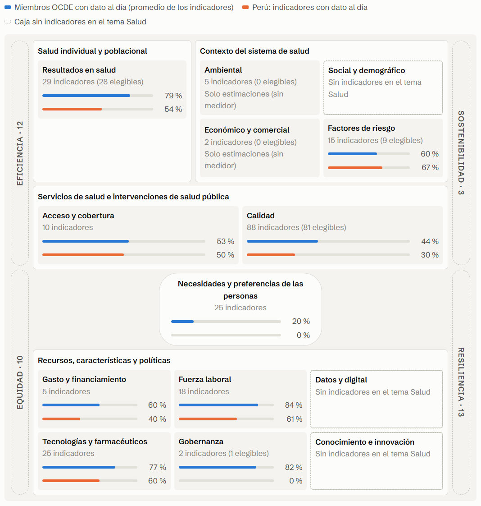

Salud pública · Adhesión a la OCDE · Datos abiertos
Indicadores de salud de la OCDE: qué medir primero para que el Perú se compare

Pregunta
¿Qué indicadores de salud reportan al día los 38 países de la OCDE, en qué parte de su marco de desempeño se ubican y cuáles debería medir primero el Perú para compararse?
Resultado
224 indicadores en 79 conjuntos de datos. Los miembros no priorizan todo por igual: 35 están al día en casi todos y 54 en menos de un tercio. El Perú tiene 78 de 202 al día, más que Estados Unidos, Costa Rica, México y Colombia, y le faltan 31 que la mayoría sí mide.
Qué hice
Una página web que ordena todos los indicadores del tema Salud de la OCDE dentro del marco renovado de evaluación del desempeño de los sistemas de salud (OCDE, 2024) y los mira desde el Perú, que está en proceso de adhesión.
- Cada indicador está en una caja del marco, según los ejemplos que da el propio documento. Tres cajas quedan vacías: social y demográfico, datos y digital, y conocimiento e innovación.
- Junto al promedio OCDE de cada indicador está el valor del Perú. Si el Perú lo mide de otra forma, se marca y se explica la diferencia: por ejemplo, reporta médicos profesionalmente activos y la OCDE compara médicos en ejercicio.
- Como reportar a la OCDE no es obligatorio, la parte de los miembros con un dato reciente indica qué priorizan. Lo más reportado es la fuerza laboral (84 % en promedio); lo menos, la experiencia de los pacientes (20 %).
- Para el Perú, cada indicador recibe una prioridad: 31 por empezar a medir, 13 por alinear su definición y 1 por actualizar, con la fuente peruana que declara la ficha de la OCDE (INFORHUS, RENIPRESS, SIS, ENDES, INEI).
- Un pipeline al estilo n8n muestra los 20 pasos del trabajo, con los datos que pasan de uno a otro y las dos correcciones que hubo.
Cómo se hizo
Los 79 conjuntos de datos se descargaron con la API de la OCDE (4.4 millones de filas), junto con 160 fichas metodológicas. El análisis está en Python, en 14 scripts numerados según un mapa de procesos. «Al día» significa que el último dato del país está a no más de dos años del más reciente disponible para ese indicador. El promedio usa una sola serie comparable por indicador; las 224 series se revisaron una por una.
Limitaciones
- Tener un dato al día no garantiza que sea comparable: las fichas detallan las diferencias de cada país.
- Solo cubre el tema Salud de la OCDE. Hay datos afines en otros temas (población, gobierno digital, investigación) que no se incluyeron.
- El conteo da el mismo peso a todos los indicadores, y el promedio es simple: no pondera por población.
- Los datos del Perú vienen de la revisión de adhesión; algunos son estimados o usan definiciones propias.
Fuentes
OCDE, OECD Data Explorer, tema Salud (OECD Health Statistics 2026, indicadores de calidad, PaRIS y la encuesta de características de los sistemas de salud), descargado el 16 y 17 de noviembre de 2026. OCDE (2024), Rethinking Health System Performance Assessment: A Renewed Framework.